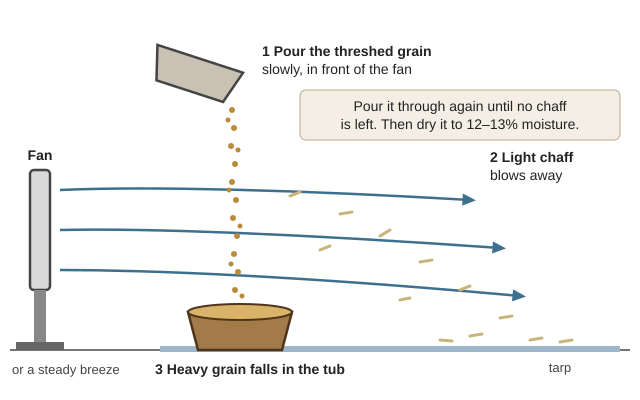
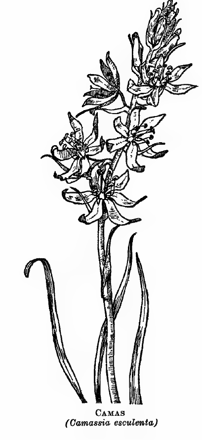
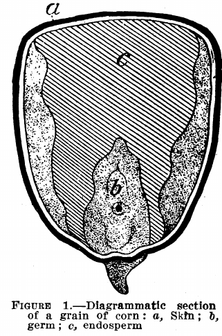
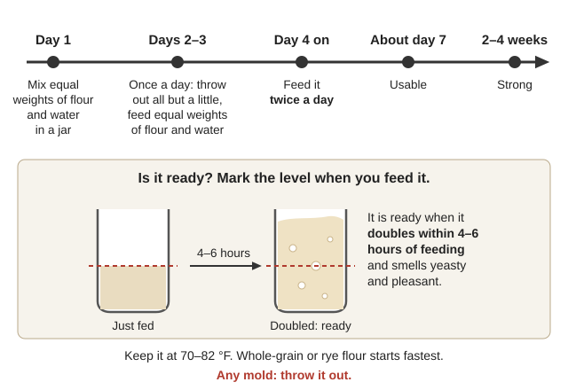

📘 Guides › 🍞 Food · 🆘 Emergency · 📇 Index A–Z · 💬 Ask
🌾 Food From Scratch
How to make staple ingredients — flour, masa, leavening, salt, sweetener, fat — from what grows or can be raised around the Illinois Valley, and how to turn them into bread, tortillas, pasta, crackers and other everyday food. Details and more recipes are in Food-From-Scratch\ (grain, wild and local staples, breads and staples) and Gardening-Food\. The links open each book on the drive at the right page.
⚠️ Two foods here can kill if you get them wrong: camas has a deadly look-alike (death camas), and acorns and lye/ash-cooked corn must be processed properly. Follow the steps exactly, and never eat a wild plant you can't identify with certainty.
🗓️ The year at a glance
| When | What to gather or make | Source |
|---|---|---|
| Spring | Cattail shoots, 4–16 inches long | Cattail guide, p. 1 |
| April–May | Death camas blooms (what it looks like) — watch and mark your camas bed now | PNW 104, p. 1 |
| Mid-April | Plant corn and potatoes (Rogue Valley advice — our valley floor frosts later; see the Start Here frost table) | OSU EM 9027, p. 22 |
| June–July | Hazelnuts — pick before the bears do | Hupa, p. 39 |
| Summer | Grain harvest; dig camas after it flowers | SARE; Camas, p. 1 |
| Late Sept–Nov | Acorns (the second fall); sugar pine nuts; bay nuts | UCCE, p. 2; Hupa, p. 40 |
| Cool months | Butcher and render (raw fat keeps only 5–7 days even chilled) | Minnesota, p. 2 |
| Leaf drop → bud break | Tap bigleaf maples on freeze–thaw days (how to tap) | OSU EM 9163, p. 3 |
📚 Go deeper: OSU Growing Your Own, p. 21 — gardening in southern Oregon; Food Plants of the North American Indians — 1,112 native food plants and how each was prepared.
🌾 Flour from grain
- Grow hulless varieties of oats and barley if you can — hulled types need dehulling. Wheat and corn are the easiest staples to grow and grind. Winter grains are sown in fall and cut the next summer: ¼–½ inch deep, about 1 foot apart each way (SARE, p. 2).
- Harvest when the heads are fully tan and nodding and the kernels are too hard to dent with a fingernail. Cut about 10 inches below the heads.
- Thresh by stomping the heads in a clean bin or on a tarp (a threshing box); winnow by pouring the grain slowly in front of a fan (or in a breeze) so the chaff blows away. Repeat. (SARE handout, p. 1)
- Dry to 12–13% moisture before storing — wetter grain heats, molds and draws insects. Field test: a dry kernel resists your thumbnail and cracks sharply between your teeth. (Peace Corps Small Farm Grain Storage, p. 55) If you dry it with heat, keep eating grain below 140 °F and seed grain below 113 °F (p. 53).
- Store whole grain, grind as needed. Whole grain keeps for years; flour goes rancid within months once milled. A hand grain mill (drawing; a homemade pipe grinder) is worth owning; otherwise grind between two stones (a quern: a turning top stone on a fixed bottom one) and sift out the bran (Shifts and Expedients, p. 519).
- Kill pests in stored grain: freeze small bags 2–3 days, or heat a ½-inch layer at 140–150 °F for 30 minutes (may weaken bread rise). Store airtight, and only when dry. (USU Food Storage in the Home, p. 14; the common grain pests, FAO p. 78; rice weevil)
- A sealed, full container kills bugs on its own — they use up the oxygen. Keep the grain you dip into daily in a separate small container (Peace Corps, p. 279).

Winnowing after threshing: the breeze carries off the light chaff and the grain drops into the tub; pour it through again until it's clean (a diagram drawn for this guide).Best-quality rotation times (sealed, about 70 °F; a 90 °F shed roughly halves them — USU, pp. 11, 17–19): whole wheat kernels 25 years · white flour 1 year · cornmeal 1 year · dry beans 1 year · whole-wheat flour only 2 weeks. USU says these are for rotating stock, not how long food stays usable; dry beans and rice packed with oxygen absorbers keep for decades (Food Security guide).
| If this goes wrong | Fix |
|---|---|
| Grain feels warm or smells musty | Too wet — spread it and dry it now; by the time you feel heat you're late (Peace Corps, p. 54) |
| Bugs after freezing | Thaw a sample on a tray; if anything crawls, freeze again (USU, p. 14) |
| "Bay leaves didn't work" | They don't — only clean, dry grain in tight containers stays bug-free (USU, p. 15) |
📚 Go deeper: Peace Corps Small Farm Grain Storage, p. 278 — drying, airtight storage and insects in depth; USU Food Storage in the Home, p. 13 — pest treatments and storage times; FAO Barley, p. 63 — barley breads and dishes.
🌰 Acorn flour
📷 Not sure what it is? Photograph it with the plant and mushroom identifier (🔧 Tools tab). It suggests names and flags poisonous groups, but it's often wrong: confirm every feature here before you eat or use anything.
Our oaks — tanoak (the traditional favorite), California black oak, Oregon white oak and canyon live oak (tanoak photo; oak and acorn drawing) — all make good flour, but every acorn must be leached to remove bitter tannins. A tanoak can drop over 200 pounds in a good year and bears some crop every year (NRCS Tanoak, p. 1).
- Gather the second fall (late September–October); the first acorns down are mostly wormy. Dry them 2–5 days in the sun or 20 minutes in a 175 °F oven, door ajar. Whole, dry acorns keep several years — in sacks or jars, not plastic. (UCCE, p. 2)
- Crack and shell them, and remove any moldy or wormy ones. Grind the nutmeats to a coarse meal or flour.
- Leach — any one of these:
- Hot: soak in hot water for an hour, drain, repeat several times (fastest).
- Running water: a cloth bag of meal in cold running water for several hours.
- Daily change: 3 parts water to 1 part meal in jars, kept cool; pour off the dark water and refill every day for about a week.
- Traditional: pour nearly scalding water over fine flour in a hollow scooped in clean sand (Hupa, p. 38).
- It's done when it tastes sweet, not bitter or puckery. Cold leaching keeps more of the starch's binding power (better for bread); hot is faster.
- Use it wet as mush/porridge, pat it into flatbread on a hot stone or pan, or dry it and replace ¼ to ½ of the wheat flour in bread (acorn flour has no gluten on its own).
- Ground meal goes rancid in a warm room — grind only a few weeks' worth and keep it cold (UCCE, p. 2).
Other local nuts need no leaching: hazelnuts (June–July, dry and eat raw; photo) and sugar pine nuts (October; pound the cones to free the seeds) — Hupa, pp. 39–40. Bay nuts (Oregon myrtle; peeled bay fruit) must be roasted at 350 °F for 30–45 minutes until dark-chocolate brown; they taste of coffee and contain a caffeine-like stimulant (UCCE, pp. 2–3).
📚 Go deeper: UCCE Foods from the Tanoak Forest, p. 2 — modern acorn and bay-nut processing step by step; Goddard, Life and Culture of the Hupa, p. 37 — how acorns were gathered, ground, leached and cooked just south of us; NRCS Tanoak guide, p. 2 — storage, leaching and acorn bread.
🌰 The local way: choosing oaks, storing, pounding, leaching in a sand basin and stone-boiled mush, as the valley's first peoples did it, are in Skills of the Valley's First Peoples.
🌿 Camas, cattail and other local starches
- Camas bulbs (Camassia quamash — meadows, blue flowers in spring; photo) were a major food here. They must be pit-roasted or slow-baked 24–36 hours — long cooking turns the indigestible starch sweet. Dry cooked bulbs or cakes for storage. ⚠️ Death camas grows in the same meadows and its bulbs look the same. Flower color is not a safe test. Only harvest from a bed you have watched bloom and learned plant by plant; if there's any doubt, leave it. (USDA Great Camas guide, pp. 1–2;
Wild-Plants\death camas guide; death camas flowers and leaves) - Dig after flowering, take only the big bulbs, replant the small ones, and rest each patch a few years. Fresh bulbs don't keep; dried camas cakes are soaked overnight before eating (Camas guide, pp. 1–2).
| Camas (edible) | Death camas (deadly) | |
|---|---|---|
| Flowers | Blue-violet to creamy white, on a tall leafless stalk | Greenish to yellowish-white, in a pointed cluster |
| Height | 24–48 inches | 6–18 inch stem |
| Leaves | Long, narrow, grass-like | Grass-like, V-shaped, edged with stiff hairs |
| Bulb | Edible only after long cooking | Blackish scales, no onion smell — every part poisonous |
Sources: Camas guide, p. 2; PNW 104, pp. 1–2. Death camas drawn: Army survival manual; Air Force survival handbook. Some Oregon camas (great camas) is white-flowered — which is why color can't be trusted. Death camas symptoms start 1–8 hours after eating (drooling, vomiting, weakness, irregular heartbeat): get help at once.

Camas: open, six-petaled flowers spaced up a tall stalk above long, narrow leaves (Saunders, p. 44). The flowers are blue (this old drawing has no color); the bulbs look like death camas, so dig only plants you marked while they bloomed blue. Death camas: small yellowish-white flowers crowded at the top of a short stalk, grass-like leaves; left, meadow death camas (AIB 415, p. 35).
Death camas: small yellowish-white flowers crowded at the top of a short stalk, grass-like leaves; left, meadow death camas (AIB 415, p. 35).
- Cattail (Typha latifolia; drawing; photo): young shoots and stem bases (boiled or roasted), green flower spikes (boiled like corn), pollen to stretch flour, and rhizome flour (the root core is 30–46% starch — pound, soak, let the starch settle, dry it). Harvest only from clean water; cattails take up pollutants. (Cattail guide, p. 1)
- ⚠️ Western waterhemlock grows in the same wet ground — the most poisonous plant in North America; a walnut-sized piece of root can kill a cow. Its stem base and roots are hollow with cross-walls and ooze yellow, oily juice. Never dig roots in wet ground unless you're sure. (PNW 109, p. 1; photos of the chambered root; look-alikes compared, pp. 3–4; Army drawing)
- More: USDA Food Plants of the North American Indians lists about 1,100 native food plants and how each was prepared (p. 6).
 Western water hemlock, the killer in wet ground: the thick rootstalk is hollow, with cross-walls making chambers full of poisonous juice (AIB 415, p. 110).
Western water hemlock, the killer in wet ground: the thick rootstalk is hollow, with cross-walls making chambers full of poisonous juice (AIB 415, p. 110).
📚 Go deeper: USDA Great Camas guide — harvest, cooking, drying; PNW 104 Meadow Deathcamas — identification photos; PNW 109 Western Waterhemlock, p. 3 — photo comparison with look-alikes.
🌽 Corn: masa, tortillas and hominy
Always cook dried corn with lime or wood ash ("nixtamal") before making it a staple — it unlocks the corn's niacin. People living mostly on untreated cornmeal get pellagra (FAO Maize, p. 13).
- Masa with lime (food-grade slaked lime, cal): use lime 1% of the dry corn's weight (5 g of lime per 500 g of corn — weigh it if you can) and water 1½ times the corn's volume. Heat to just below a simmer (200–210 °F) until the skins slip off but the center is still firm (often under 30 minutes). Rest 8–12 hours in the liquid, then rub and rinse off the skins. Grind while cold (a metate or stone mill, with a little cold water; metate and hand mill); use the masa within a day. (Smithsonian method, pp. 1–3) Fresh corn needs less lime and cooking; old, hard corn more (FAO, p. 66).
- With wood ash instead: boil shelled corn 15–30 minutes in weak lye water made from hardwood ashes until the hulls loosen, then rinse very thoroughly in running water until no lye remains. Lye is caustic — gloves and eye protection; never taste it.
- Lye hominy with store lye (USDA) — use pure lye (100% sodium hydroxide, sold for soap-making), never a drain cleaner with other chemicals: 5 oz lye in 6 quarts cold water; stir in 5 quarts whole corn and let stand 15 hours. Wash and rub the corn in a cloth bag until hulls and black tips are gone, then boil 3–4 hours in salted water, changing the water once or twice to remove the lye taste. Makes 15–20 quarts. (FB 1236, pp. 20–21)
- Corn tortillas: knead masa with a little water to a soft, play-dough feel, press balls flat between plastic or cloth, and cook on a hot dry griddle about a minute a side. Keep the masa under a damp cloth — dry masa cracks (Smithsonian, p. 3).
- Hominy (whole kernels; an old hominy block; stone mortar and muller) and cornbread, mush, polenta and corn pone recipes: USDA Corn and Its Uses as Food (FB 1236, p. 11). To stretch wheat, use a scant cup of cornmeal per cup of flour in quick breads and bake longer.
- If the kernels go mushy all the way through, they're overcooked and won't make masa — stop sooner next time (Smithsonian, p. 2).

Inside a kernel: lime or lye loosens the skin (a) so it rubs off; the germ (b) holds most of the fat (FB 1236, p. 6).📚 Go deeper: Smithsonian Nixtamalization — the full masa method; USDA FB 1236 Corn and Its Uses, p. 11 — mush, pone, cornbreads and hominy; FAO Maize, p. 96 — tortillas and other corn recipes; Parker, Iroquois Uses of Maize, p. 115 — hominy, samp and old corn dishes.
🍞 Leavening without store yeast or baking powder
- Wild sourdough starter: mix equal weights of flour (whole-grain or rye starts fastest) and unchlorinated water in a jar. Every day, discard all but a little and feed it equal weights of flour and water (twice a day from day 4). Keep it at 70–82 °F. Usable around day 7, strong in 2–4 weeks — it's ready when it doubles within 4–6 hours of feeding and smells yeasty and pleasant. Throw it out if mold appears. (Illinois Sourdough 101, pp. 1–3)
- Keep it going: save ½ cup each time you bake; the night before, feed it equal parts flour and water and leave it warm 6–8 hours. Store in glass, not metal, with the lid loose. (Alaska's guide warns against all metal; Illinois allows stainless steel but never copper, iron or galvanized.) (UAF Sourdough, p. 2)
- Back-up: spread some starter thin, dry it until brittle, and store it airtight. Revive by crumbling into warm water overnight, then feeding.
- Sourdough pancakes and muffins get ½ tsp baking soda dissolved in 1 Tbsp water, stirred in last. Never put soda in the starter itself — it can kill the yeast (UAF, pp. 2–3).
- Potato yeast and "saving a piece of dough" for next time: USDA Bread and Bread Making (FB 807, p. 10) — liquid yeast keeps about two weeks in a cool, dark place.
- Quick breads: sour milk or buttermilk + ½ tsp baking soda per cup replaces sweet milk and baking powder (FB 1136, p. 22). Homemade baking powder = 1 part baking soda : 2 parts cream of tartar (Fannie Farmer, p. 92).

The first weeks of a wild starter, and the doubling test that tells you it's ready (a diagram drawn for this guide).| Starter trouble | Fix |
|---|---|
| Not rising after a week | Somewhere warmer; switch to rye or whole-grain flour; avoid very hard or chlorinated water (Illinois, pp. 1–2) |
| Dark liquid on top ("hooch") | It's hungry — pour it off or stir it in, then feed (Illinois, p. 3) |
| Any mold | Throw it out; restart from your dried back-up (Illinois, p. 3) |
📚 Go deeper: Illinois Sourdough Bread 101, p. 4 — step-by-step loaf and schedules; UAF Sourdough, p. 3 — hotcakes, muffins and bread; USDA FB 807, p. 10 — potato yeast and saved dough.
🧂 Salt, 🍯 sweeteners and 🥓 fat
- Salt from seawater (sea salt): seawater is about 3.5% salt — roughly 4–5 gallons per pound of salt in practice. Collect it away from harbors and outfalls, filter through cloth, boil down to a slush, then finish drying slowly; pour off the last bitter liquid for better taste.
- Bigleaf maple syrup (OSU 2025 guide): tap after leaf drop and a hard freeze, through winter freeze–thaw days, until buds break. 5/16-inch spile in a 2-inch hole (tapping, step by step); collect sap daily and boil it within 24 hours. Bigleaf sap is thin — about 80 gallons of sap per gallon of syrup (20 gallons ≈ 1 quart after ~8 hours of boiling). Syrup is done at 7 °F above the boiling point of water where you are — about 216 °F around Cave Junction's elevation (219 °F at sea level). (OSU EM 9163, pp. 2–8) Keep buckets lidded — "ropey" (stringy) sap is spoiled (photos). Let syrup settle and pour it off the gritty "sugar sand"; to keep it on a shelf, bottle it at 180–190 °F into just-boiled jars (pp. 6, 8–9).
- Honey: strain through progressively finer cloth, keep it sealed (wet honey ferments); render the wax for candles and salves (
Practical Actionbrief, p. 1). Never heat honey to dry it — blow air over a pan instead. Solid ("granulated") honey is fine. (pp. 3–4) Honey replaces sugar cup for cup in baking (FB 1136, p. 23). - Lard and tallow: chill fat and render it within about a week. Melt slowly with a little water, stirring, at 235–245 °F (no copper pots), until bubbling stops and the cracklings float and turn chestnut-brown (cracklings); strain into clean jars, fill full, store cool and dark. (Minnesota, pp. 2–3) Leaf (kidney) fat makes the best lard; strong-tasting gut fat is for soap. Slightly rancid lard can be rescued by heating it with sliced potatoes until they're dark brown, then straining (pp. 2, 4).
- Nut oil (hazelnuts, acorns): grind, boil with water, and skim the oil as it rises; clarify and store cool (
Practical Actionbrief, p. 2). Discard moldy nuts first; store oil dark and airtight, never in copper (pp. 1, 6; hand oil presses, p. 3). - Butter: sour the cream mildly at 65–75 °F, churn at 52–66 °F until grains the size of wheat form, drain, wash twice in cold water, and work in ¾ oz salt per pound (USDA FB 876, pp. 23–24; the churn, p. 10; working the butter, p. 16; a small churn; butter churn).
- ⚠️ Homemade vinegar (FB 1424) is fine for cooking, but never for canned pickles — its acid strength is unknown, and canning recipes need tested 5% vinegar (USDA Canning Guide 1, p. 28).
📚 Go deeper: OSU Making Bigleaf Maple Syrup, p. 3 — tapping, sanitation and bottling, with photos; Minnesota Making Lard at Home — rendering and what spoils lard; Practical Action Honey Processing — straining, moisture and wax; USDA FB 876 Making Butter — cream, churning and storage.
🥩 Jerky
- Heat the meat to 160 °F (poultry 165 °F) before or right after drying — drying alone doesn't kill E. coli, Salmonella or trichinosis. Ten people caught trichinosis from cougar jerky in 1995 (PNW 632, p. 8); cougar and bear are hunted in our units (ODFW, pp. 67–68). Either dip strips 1½–2 minutes in simmering brine before drying, or heat the dried strips 10 minutes in a 275 °F oven (pp. 9, 17; oven-heated jerky, p. 14).
- Dry at 145–155 °F (check with a thermometer; an oven with the door propped open works). Sun drying isn't recommended. Done when a cooled strip cracks but doesn't snap (pp. 9, 18; photos). It keeps 1–2 months.
📚 Go deeper: PNW 632 Making Jerky at Home Safely — tested methods and the hot-brine recipe; NDSU Preservation of Game Meats and Fish, p. 5 — game jerky, smoking and curing.
🥖 Staples
- No oven thermometer? Put a scrap of white paper or ½ tsp flour on a tin plate in the oven; if it turns light golden brown in 5 minutes, it's right to start bread (FB 807, p. 15). Over a fire, cook on coals, not flames (OSU EM 9331, p. 4).
- Danger zone: cooked food left between 40 °F and 140 °F for over 2 hours can make you sick (OSU EM 9331, p. 5).
Basic yeast bread — per loaf (USDA FB 807, pp. 13–17): 1 cup lukewarm liquid, about 3 cups flour, 1 tsp salt, 1 Tbsp sugar or honey, up to 1 Tbsp fat, and yeast (or ½ cup active sourdough starter in place of yeast and part of the liquid). Knead until smooth and springy, let it double, shape, let it rise again, and bake at about 400 °F for 40–50 minutes, until it sounds hollow when tapped. Stop adding flour once the dough doesn't stick to unfloured hands — too much flour makes heavy bread. Rise it covered, at about 80 °F; it's ready for the oven when a light touch leaves a slight dent.
Simple sourdough loaf: 1 cup active starter + 1 cup water + about 3 cups flour + 1½ tsp salt. Knead, let rise 4–8 hours (longer when cool), shape, rise 2–4 hours more, bake at about 425 °F for 35–45 minutes. Poke test: a floured finger-dent that springs back halfway means bake now; one that stays means over-risen — bake at once. A preheated Dutch oven (lid on 30 minutes, then off) gives a good crust without a real oven (Illinois, pp. 5–6).
Flour tortillas / flatbread: 2 cups flour, ¼ cup lard, 1 tsp salt, about ¾ cup warm water. Knead, rest 20 minutes, roll thin, cook on a hot dry pan 30–60 seconds a side. Works with part acorn or barley flour. Barley flatbread with no yeast: FAO Barley, p. 63.
Biscuits (USDA FB 1136, p. 23): 2 cups flour, 1 tsp salt, 2 tsp baking powder (or the soda and sour milk swap above), 2 Tbsp fat, ⅔–¾ cup liquid. Bake hot (about 450 °F) 12–15 minutes. Keep it all cold and handle it lightly. Too much soda makes them yellow and bad-tasting (p. 22).
Crackling bread: for each cup of cornmeal, ¾ tsp salt and ½ cup cracklings left from rendering lard; pour on boiling water until you can mash it by hand, shape into cakes and bake (FB 1236, p. 12).
Pasta / egg noodles: 2 cups flour, 1 egg + 2 yolks, ½ tsp salt, about ⅓ cup water (or the old way: one egg, a pinch of salt and enough flour for a very stiff dough). Knead 8–10 minutes, rest 10–20, roll paper-thin, cut ⅛–¼ inch strips. Cook fresh 2–4 minutes, dried 10–12. To store, dry until the noodles snap; keep airtight about a month (longer frozen). (Illinois Extension, p. 2; Fannie Farmer 1896, p. 167) Because of the raw egg, Illinois says don't air-dry over 2 hours — finish them at about 135 °F.
Hardtack (keeps for years): 3 parts flour to 1 part water (no salt — salt draws moisture and mold), stiff dough, ½ inch thick, prick with holes, bake 1 hour at 375 °F, then dry 3 more days. Soak or crumble into soup to eat. (City of Alexandria)
Beans: soak overnight (6 cups water + 2 tsp salt per pound) or quick-soak (boil 2 minutes, stand 1 hour), then simmer 2–4 hours. Old beans take longer; lentils and split peas need no soak. Beans + corn (or wheat) together make complete protein. Add tomatoes or vinegar only after they're tender — acid stops beans softening (USU, pp. 2–4). Canning beans needs a pressure canner: at Cave Junction's elevation a weighted-gauge canner runs at 15 lb (OSU EM 9435, p. 3).
Porridge and mush: cracked wheat, oats, barley, cornmeal or leached acorn meal simmered in about 3–4 times their volume of water with a pinch of salt. Hominy grits can finish overnight in a hay box (how to build one; its parts) after a 10-minute boil; coarse hominy needs longer on the fire first (FB 1236, p. 19).
📚 Go deeper: USDA FB 807 Bread and Bread Making, p. 12 — kneading, rising and baking; USDA FB 1136 Quick Breads and Biscuits, p. 22 — biscuits, muffins and griddle cakes; Fannie Farmer 1896, p. 92 — hundreds of everyday recipes; Practical Action Fireless Cookers, p. 5 — hay-box cooking times.
Old recipes in these books are fine for methods; for food safety (canning, curing, storing) follow the modern USDA guides in Gardening-Food\.
🖼️ Pictures & diagrams
Look before you try it. 🖼️ = drawings in the books on this drive; 📷 = photos in the offline Wikipedia.
Grain: threshing, grinding, pests
- Threshing box for small lots — McCormack, p. 4; Threshing; Winnowing
- Hand grain mill and metate — FAO, p. 17; Quern-stone
- Homemade pipe-and-can grinder — Kearny, p. 83
- Stone mill, how it is built — FAO, p. 72
- Weevils and moths in stored grain — FAO, p. 78; Rice weevil
Acorns and nuts
- Tanoak and its acorns — NRCS, p. 1; Notholithocarpus; Acorn
- Oaks and acorns — Army survival manual, p. 449; Quercus kelloggii; Quercus garryana
- Hazelnut — NRCS, p. 1; Corylus cornuta
- Bay nut inside its fruit — UCCE, p. 3; Umbellularia
- Sugar pine — Pinus lambertiana
Camas, cattail and their deadly look-alikes
- Camas in bloom — NRCS, p. 1; Camassia quamash; Camassia leichtlinii
- Death camas: leaves, flowers, bulbs — PNW 104, p. 2; Army, p. 507; Air Force, p. 347; Toxicoscordion venenosum
- Pit roasting — Earth oven
- Cattail — Army, p. 416; NRCS photo; Air Force, p. 362; Typha latifolia
- Western water hemlock: chambered root, look-alikes — PNW 109, p. 1; pp. 3–4; Army, p. 519; Cicuta douglasii
Corn
- Hominy block and stone mortar — USDA FB 1236, p. 9; Parker, p. 68; pounding corn, Parker, p. 107
- Inside a corn kernel (skin, germ, starch) — USDA FB 1236, p. 6
- Nixtamal, masa and tortillas — Nixtamalization; Masa; Corn tortilla; Hominy
Syrup, oil, lard and butter
- Tapping a bigleaf maple — OSU, p. 4; spoiled sap and dirty spiles, p. 6; Acer macrophyllum
- Hand oil presses — Practical Action, p. 3
- Rendered lard and cracklings — Lard; Cracklings
- Churning, washing and working butter — USDA FB 876, p. 10; p. 13; p. 16; small churn, Practical Action, p. 3; Butter churn
Jerky, bread and slow cooking
- Oven-heating jerky — PNW 632, p. 14; Jerky
- What good rolls look like — USDA FB 1136, p. 17; Kneading
- Dutch-oven bread, flatbread, hardtack — Dutch oven; Flatbread; Hardtack
- Hay-box cooker — USDA FB 771, pp. 8–9; Practical Action, p. 2; Haybox
🔗 Related guides
- Light Without the Grid — tallow candles and lard-oil lamps
- Pigs — lard, and pigs that eat the scraps; Cattle and Sheep — tallow
- Illinois Valley — Start Here — frost dates, soils and the deadly wild-plant look-alikes.
- Make-Do Household Guide — hay-box cooker, soap from fat and ashes, food containers, pests.
- Root Cellar Guide — root cellars, drying, curing, fermenting and keeping eggs.
- Seed Bank Guide — planting calendar, saving grain and bean seed, grafting.
- Mushroom Guide — safe local edibles, drying and growing mushrooms.
- Nuclear Fallout Guide — keeping food and water clean after fallout.
- Medical — Read Me First — food poisoning and where the medical books are.
- Skills of the Valley's First Peoples — acorns, camas, salmon, cordage and baskets, houses, and tending the land with fire, the way people here lived for thousands of years.